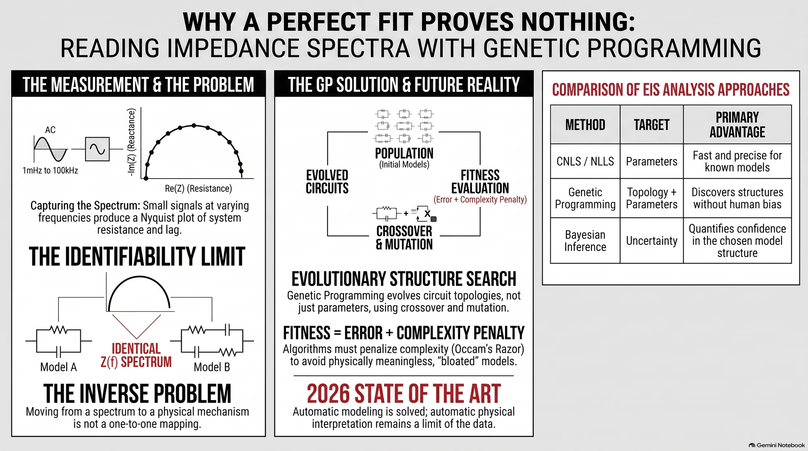

מחקר עומק
המדידה מושלמת, ההתאמה מושלמת, ואיש עדיין לא יודע מה יש בפנים
בספקטרוסקופיית עכבה מודדים מערכת בעשרות תדרים ומקבלים עקומה. הבעיה היא שארבעה מעגלים חשמליים שונים לגמרי יכולים לייצר את אותה עקומה בדיוק, ולכן התאמה מצוינת אינה ראיה לכלום. אלגוריתם אבולוציוני שמחפש את מבנה המודל ולא רק את הפרמטרים שלו הוא הכלי המתאים ביותר לבעיה הזאת, ובכל זאת ב-2026 הוא פותר רק את חציה.
{kind=link}

יש סוג של בעיה מדעית שבה שיפור המכשיר לא עוזר. אפשר למדוד מדויק יותר, לחזור על המדידה מאה פעם, להוריד את הרעש עד לרמה שלא הייתה אפשרית לפני עשור, ועדיין לא לדעת את התשובה. ספקטרוסקופיית עכבה היא דוגמה נקייה במיוחד. היא נמצאת מאחורי בדיקת בריאות של סוללות ליתיום, ניטור קורוזיה, אפיון תאי דלק וחיישנים ביולוגיים, והקושי בה אינו במדידה. הוא בפירוש.
העיקרון עצמו פשוט. במקום להפעיל מתח קבוע ולבדוק כמה זרם עובר, מפעילים אות מתנדנד קטן וסורקים תדרים, בדרך כלל מאלפית הרץ ועד מאה קילוהרץ. בכל תדר מודדים שני דברים: פי כמה המערכת מקטינה את הזרם, ובכמה היא מאחרת או מקדימה אותו ביחס למתח. שני מספרים בכל תדר. אפשר לחשוב על זה כהקשבה למערכת בקצבים שונים, כי תהליכים איטיים כמו דיפוזיה מגיבים רק בתדרים נמוכים, ותהליכים מהירים כמו קיבול בממשק שולטים בתדרים גבוהים.
שני המספרים האלה מתאחדים למספר מרוכב אחד, והוא נקרא עכבה. דוגמה מספרית שכדאי להחזיק בראש: נגד של 100 אוהם בטור עם קבל של 10 מיקרופאראד, בתדר 100 הרץ. החלק הממשי הוא 100 אוהם, כלומר מה שהופך לחום. החלק המדומה הוא מינוס 159.2 אוהם, כלומר מה שנאגר ומוחזר. יחד זה גודל של 188.0 אוהם בזווית של מינוס 57.9 מעלות. מי שרוצה להבין מאיפה מגיע המספר המדומה הזה ימצא במהדורה גם דף לימוד על מספרים מרוכבים.
עד כאן הכל ידוע וניתן לחישוב. הקושי מתחיל בכיוון ההפוך. נתונה העקומה, מה המערכת. הדרך המקובלת היא לבנות מעגל חשמלי שקול: נגדים, קבלים, רכיבים שנקראים CPE ו-Warburg, ולחבר אותם בטור ובמקביל עד שהמעגל מייצר את אותה עקומה שנמדדה. אז מייחסים לכל רכיב משמעות פיזיקלית. הנגד הזה הוא התנגדות האלקטרוליט, הקבל הזה הוא השכבה הכפולה בממשק, וכן הלאה.
וכאן נמצאת הבעיה שכל המחקר הזה סובב סביבה. מעגלים בעלי טופולוגיה שונה לחלוטין יכולים לייצר בדיוק אותה פונקציית עכבה. לא דומה, זהה. חברת BioLogic, שמייצרת את המכשירים האלה, מציגה בחומרי ההדרכה שלה מקרה שבו ארבע טופולוגיות שונות אינן ניתנות להבחנה על סמך הספקטרום בלבד, ובכללן מבנה מסוג Voigt ומבנה מסוג ladder שנראים שונים לגמרי ומתפקדים כאותה פונקציה מתמטית. המשמעות חדה: התאמה מצוינת לנתונים אינה הוכחה שהפירוש הפיזיקלי נכון. היא אפילו לא ראיה חלשה לכך, אם קיים מעגל אחר שנותן את אותה תוצאה.
לכן צריך להפריד שלוש שכבות שהשפה נוטה לערבב. מדידה היא לא התאמה טובה, והתאמה טובה היא לא פירוש. הזזה בין השכבות היא המקום שבו מאמרים נשברים. חוקר מודד עקומה, מתאים לה מעגל, מקבל שגיאה קטנה, וכותב שהתהליך הדומיננטי הוא העברת מטען. השגיאה הקטנה אמיתית. המשפט האחרון הוא השערה.
מכאן הגיוני להגיע ל-Genetic Programming. אלגוריתם גנטי רגיל מקבל מבנה קבוע מראש ומחפש את הערכים הטובים ביותר עבורו. אם החלטתם שהמעגל הוא נגד בטור עם צמד מקבילי, האלגוריתם יחפש שלושה מספרים. Genetic Programming עושה משהו אחר: הפרט באוכלוסייה אינו רשימת מספרים אלא עץ, ולעץ יש גודל ומבנה משתנים. מוטציה יכולה להחליף קבל ברכיב CPE, והכלאה יכולה להעביר ענף שלם ממעגל אחד לאחר. החיפוש רץ בו זמנית על הצורה ועל המספרים. זו התאמה מושלמת לבעיה, כי מה שרוצים לגלות הוא בדיוק אובייקט סימבולי בעל מבנה משתנה.
אבל חיפוש חופשי על מבנה מייצר בעיה משלו. אם הציון היחיד הוא כמה טוב המודל מתאים לנתונים, האבולוציה תלמד מהר שכל רכיב נוסף מקטין קצת את השגיאה, והעצים יתנפחו. בכל תחום זה מטרד. בעכבה זה מסוכן במיוחד, מפני שכל רכיב במעגל מזמין פירוש כימי, ומעגל מנופח מייצר סיפור מנופח. לכן ציון רציני נראה אחרת: שגיאת התאמה, ועוד קנס על מורכבות, ועוד קנסות פיזיקליים. עבודת Gene Expression Programming מ-Ghent University, שפורסמה ב-2021 בכתב העת IEEE Transactions on Instrumentation and Measurement, עושה בדיוק את זה. היא מסירה רכיבים מיותרים במפורש ומחפשת את המעגל הפשוט ביותר שמסביר את המדידות. היא נבדקה בעיקר על סימולציות, ובסופה מקרה בוחן אחד של מדידות ביולוגיות אמיתיות.
צריך לומר בבירור מה זה אומר על ה-AI כאן, כי הניסוח המקובל הפוך. האלגוריתם אינו מגלה מבנים בלי הטיה אנושית. הוא זקוק לדקדוק פיזיקלי שנקבע מראש: אילו רכיבים מותרים, אילו חיבורים חוקיים, אילו גבולות על קבועי זמן, איזה התנהגות חייבת להיות סיבתית. בלי הדקדוק הזה הוא מייצר ביטויים מתמטיים חסרי פשר שמתאימים לנתונים מצוין. מה שהוא משוחרר ממנו הוא ההנחה על הטופולוגיה, לא ההנחות הפיזיקליות. זה הרבה, וזה לא אותו דבר.
הקו הישראלי בסיפור הזה אינו קישוט. קבוצתו של יועד צור בטכניון מריצה מאז תחילת העשור הקודם שיטה בשם ISGP, שבה תכנות אבולוציוני מפענח ספקטרום עכבה. חשוב לדייק במה היא עושה, כי קל לבלבל: ISGP אינו מייצר מעגל שקול. מחבריו מנגידים אותו במפורש לניתוח מעגלים. הוא מחפש את התפלגות זמני ההרפיה, כלומר את השאלה אילו תהליכים במערכת פועלים באילו קצבים, בלי לקבוע מהם. קו העבודה עבר מקתודות של תאי דלק במוצק ב-2012, דרך סופר-קבלים ב-2014 וב-2016, ועד ניתוח קרמיקה מיוננת ב-2017.
מה שקרה השנה מעניין יותר. במאמר שפורסם במרץ 2026 בכתב העת Journal of Solid State Electrochemistry בנו אלאא אגבאריה, שמעיה זברי ויועד צור מחולל של ספקטרומים סינתטיים. כלומר הם ייצרו נתונים שבהם התשובה הנכונה ידועה מראש, והריצו עליהם את השיטה של עצמם. ISGP שחזר היטב התנגדות אפקטיבית, קיבול וזמני הרפיה, ושחזר פסגה רחבה גם בנוכחות רעש. פסגה צרה מאוד הוא לא שחזר. היא חזרה כפסגה רחבה ונמוכה יותר, אף שהשטח שמתחתיה נשמר. מדובר בכישלון מדווח של החוקרים על השיטה שלהם, והוא שווה יותר מהצלחה, מפני שהוא מגדיר את גבול ההפרדה של הכלי במקום להשאיר אותו לניחוש.
סביב הקו הזה מסתדרת חזית שכולה משנת 2024 ואילך, וכדאי לקרוא אותה בזהירות כי המעמד של כל פריט שונה. AutoEIS משלב חיפוש אבולוציוני עם הסקה בייסיאנית ובדיקת סבירות סטטיסטית, ותוכנתו פורסמה במאי 2025 בכתב העת JOSS. מחקר מ-2024 בקורוזיה, שפורסם ב-npj Materials Degradation, השתמש בהסקה בייסיאנית כדי לזהות מתי הספקטרום פשוט אינו מכיל מספיק מידע כדי להצדיק מבנה מעגל מסוים. אלה נתונים מסומלצים ולא מאגר מדידות אמיתיות, וזה חשוב. בסוף 2025 הציעו פאן ועמיתיו מערכת דו שלבית שבה אלגוריתם גנטי בוחר את מבנה המעגל וריבועים פחותים לא ליניאריים מתאימים את הפרמטרים, ודיווחו על שגיאה מנורמלת מרבית של 1.07 אחוזים בבדיקות על שתי סוללות של 25 אמפר שעה, בטמפרטורות ומצבי טעינה שונים.
ועל הקצה יושבים שני פריטים שהעיתונות נוטה להציג כהישגים גמורים, ואינם. AutoREC מנסחת בניית מעגל כבעיית למידת חיזוקים, והיא preprint שגרסתו האחרונה מ-30 באוגוסט 2026, ללא ביקורת עמיתים. מחבריה עצמם מציינים קשיים במורכבות ניסויית ובכיסוי מוגבל של נתוני אימון. EIS-GPT הוא מודל טרנספורמר שמייצר גרף של מעגל שקול מתוך ספקטרום, ולפי דף המעבדה של קבוצת Liu הוא התקבל לפרסום ב-Cell Reports Physical Science. התקבל, לא פורסם. גרסת ה-preprint שלו מ-10 במאי 2026 מתארת הוכחת היתכנות שנשענת בעיקר על נתונים מסומלצים, וזה ניסוח של המחברים ולא ביקורת חיצונית.
יש בסיפור הזה גם אילוץ פיזי שאי אפשר לתכנת סביבו. מדידה בתדר נמוך מאוד אורכת זמן, פשוט מפני שמחזור אחד אורך זמן. מדידה בודדת באלפית הרץ דורשת לפחות כשמונה עשרה דקות, ובזמן הזה המערכת הנמדדת ממשיכה לחיות: סוללה נרגעת, משטח ממשיך להיאכל בקורוזיה, חיישן ממשיך לקשור. מדדתם משהו שהשתנה תוך כדי המדידה. הממצא הלא אינטואיטיבי במחקר הקורוזיה הוא שבתרחישים מסוימים אפשר להשמיט חלק ניכר מהנקודות בתדר נמוך בלי לפגוע מהותית באמידת הפרמטרים. זו תוצאה תלוית מודל, לא כלל כללי, אבל היא מרמזת שחלק מהזמן שמושקע שם נקנה בלי תמורה.
מה שמצטייר מכל זה אינו הכרזה על פריצת דרך ואינו קריאה לספקנות. מידול אוטומטי של ספקטרום עכבה עובד היום, במובן שמערכת יכולה לקבל נתונים ולהחזיר מעגל סביר בלי שמומחה יבחר אותו מראש. אוטומציה של הבנה פיזיקלית אינה עובדת, מפני שהמידע הדרוש להכרעה בין המעגלים המתחרים אינו נמצא בספקטרום. הוא נמצא בגאומטריה של האלקטרודה, בכימיה, בתלות בטמפרטורה ובניסויים משלימים. חזית המחקר עברה בהתאם מחיפוש אחר המעגל הטוב ביותר לחיפוש קבוצה של מודלים סבירים, עם אומדן אי ודאות, קנס על מורכבות ובדיקות עקביות. מה שחסר ב-2026 אינו רכיב. אבות טיפוס משכנעים קיימים לכל אחד מהם. מה שחסר הוא מערכת שמחברת את כולם ומראה, על נתונים ניסויים רחבים ומגוונים, שהיא מייצרת לא רק התאמה טובה אלא מסקנה פיזיקלית שאפשר לשחזר.